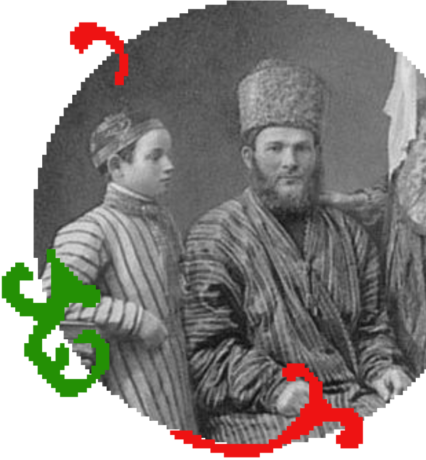

ПИР –– медиа-сервис, рассказывающий о культуре и истории народов через призму кулинарии.
Миссия
Мы заботимся о сохранении культурного наследия, освещаем важную информацию, подавая информацию с необычного угла, тем самым делая ее изучение интереснее, а также охватывая бóльшую аудиторию.С помощью Пира мы хотим привлечь внимание к важной проблеме сохранения культурного наследия.


Почему мы?
Мы используем только точные источники и мы тщательно проверяем факты, а также работаем с представителями народов лично. Таким образом, мы глубже погружаемся в культуру и имеем данные со стороны личностей. Мы уважаем и уделяем одинаковое количество внимания всем культурам и народам, избегая при этом стереотипов и предубеждений.